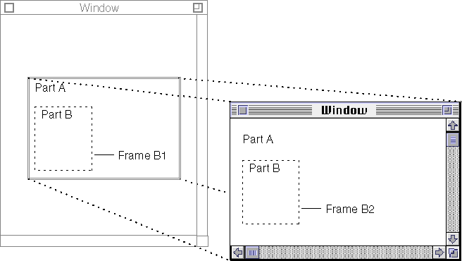

Working With Embedded Frames and Facets
Read the information in this section if your part can contain embedded parts. It discusses what information your part needs to maintain for embedded frames, and how it creates those embedded frames and facets.As a containing part, your part needs to maintain current information on the shapes and transforms of all its visible embedded frames and facets. If your part makes changes to them, it should not only update its own information but in some cases also notify the embedded parts of the changes so that they can update their own information. Your part should also support frame negotiation (see "Frame Negotiation"), to permit embedded parts to request additional frames or changes to the sizes of their existing frames.
If your part is a container part, the user can embed other parts into your part in several ways. Examples include pasting from the clipboard, using drag and drop, choosing the Insert command from the Document menu, or even selecting a tool from a palette.
The overall process of embedding a part is summarized in the section"Adding an Embedded Part". The overall process of removing a part is summarized in the section"Removing an Embedded Part". Both processes make use of the specific tasks described in this section.
Providing an Embedded-Frames Iterator
Your part must keep a list of all its embedded frames. OpenDoc does not specify the format of this list. However, your part must implement an iterator class (a subclass ofODEmbeddedFramesIterator) that gives a caller access to each of the frames in your list of embedded frames. The caller
creates an iterator to access your embedded frames by calling your part'sCreateEmbeddedFramesIteratormethod, which has this interface:ODEmbeddedFramesIterator CreateEmbeddedFramesIterator(in ODFrame frame);Your implementation ofCreateEmbeddedFramesIteratormust provideFirst,Next, andIsNotCompletemethods, as do other OpenDoc iterators. See "Accessing Objects Through Iterators" for additional discussion.Creating a New Embedded Frame
If your part embeds a part that does not already have its own display frame, you need to create a new embedded frame that will be the embedded part's display frame. Also, if you create an additional view of an existing embedded part (see, for example, "Multiple Views of a Part"), you need to create and embed a frame to hold the new view.In these situations, your part--the containing part--initiates the embedded-
frame creation. Your method to create an embedded frame calls theCreateFramemethod of your draft, which returns an initialized frame that
has already been assigned to the embedded part. (CreateFramecalls theDisplayFrameAddedmethod of the embedded part for this purpose.) This calling sequence ensures that you can use the new frame as soon as the
draft returns it.When you call
CreateFrame, you specify several features of the new frame, including the following:Once the reference to the new frame is returned, take these steps:
- containing frame: the frame (your display frame) that is to contain the embedded frame.
- frame shape: the shape of the frame to be created. Your part can use a default shape, or it can use information supplied with the data you are embedding. See "Frame Shape or Frame Annotation" for more information.
- part: the part (your part) in which the frame is to be embedded.
- view type and presentation: the initial view type and presentation the part displayed in the embedded frame is to have.
- subframe: whether or not the embedded frame is to be a subframe of its containing frame (your display frame). See "Using Subframes to Suppress the Active Frame Border" and "Using Multiple Facets" for examples.
- overlay status: whether or not the frame should overlay, or float over, the containing frame.
Creating an frame should be an undoable action. See "Undo and Embedded Frames" for information on how to set a frame's in-limbo flag when you undo or redo its creation.
- Store it somewhere in your content and add it to your part's list of embedded frames. It's up to you to decide how your part internally stores its content, including its embedded frames.
- Set the embedded frame's link status appropriately. See "Frame Link Status" for more information. If your part does not support linking, you must nevertheless set the new frames' link status (to
kODNotInLink).- If the embedded frame is visible within the containing frame, you must create a facet for it. See "Adding a Facet".
For more information on the
DisplayFrameAddedmethod, see "Responding to an Added Display Frame".Adding an Embedded Frame on Request
As a container part, your part may also need to support creation of an embedded frame when requested to do so by another part. As described in the section "Requesting an Additional Display Frame", an embedded part can call your part'sRequestEmbeddedFramemethod to get an additional frame for its content. The embedded part passes the necessary information about the requested frame, as shown in this interface:ODFrame RequestEmbeddedFrame(in ODFrame containingFrame, in ODFrame baseFrame, in ODShape frameShape, in ODPart embedPart, in ODTypeToken viewType, in ODTypeToken presentation, in ODBoolean isOverlaid);YourRequestEmbeddedFramemethod passes most of this information along to your draft'sCreateFramemethod. ThebaseFrameparameter specifies which of the embedded part's existing display frames is to be the base frame for the new frame; the newly created frame will be a sibling of the base frame and will be in the same frame group as the base frame.The
frameShapeparameter passed to this method expresses the requested frame shape in the coordinate system of the base frame. By this method, the embedded part can request, by specifying the origin of the frame shape, a relative location for the new frame compared to its base frame. YourRequestEmbeddedFramemethod should take this information into account when granting the frame shape and assigning an external transform to its facet. Specifically, you should incorporate the positioning information into the external transform (if appropriate, given the nature and state of your intrinsic content), and then return a frame shape that has been normalized--that is, one in which the origin of the frame shape is (0, 0).Based on information in the existing frame, your
RequestEmbeddedFramemethod should also assign the new frame's group ID and sequence number, by calling itsSetFrameGroupandChangeSequenceNumbermethods. Your part can assign the new frame any sequence number in the frame group, although by convention you should add the new frame to the end of the current sequence. Then theRequestEmbeddedFramemethod should add the new frame to your part's list of embedded frames. The method should also create a facet for the new frame if it is visible.Other tasks you perform are the same as when you initiate the creation of the frame (see the previous section, "Creating a New Embedded Frame"). You might implement your
RequestEmbeddedFramemethod in such a way that it calls a private method to actually create the frame. You could then use that same private method in both situations.Resizing an Embedded Frame
To change a frame's size, the user typically selects the frame and manipulates the resize handles of the frame border. The containing part is responsible for drawing the selected frame border, determining what resize handles are appropriate, and interpreting drag actions on them.You need to notify an embedded part that its frame has changed in these situations
This is the interface to
- if your part is the containing part of a frame that is resized by the user
- if your part has other reasons to change the size of an embedded frame (for example, to enforce gridding or in response to editing of your own intrinsic content surrounding the frame)
- if the embedded part's display frame has called your
RequestFrameShapemethod for frame negotiationRequestFrameShape:ODShape RequestFrameShape(in ODFrame embeddedFrame, in ODShape frameShape);Return the changed shape (the same shape reference passed to you) in the method result. After you change the embedded frame's shape, call the frame'sChangeFrameShapemethod and pass it the new shape. (For efficiency, you can first acquire the embedded frame's existing frame shape, then resize it, then callChangeFrameShape, and finally release your reference to the frame.) The frame in turn notifies its part by calling itsFrameShapeChangedmethod. In response, the embedded part may request a different frame size, as discussed in the section "Resizing a Display Frame".Note that resizing may result in your part having to adjust the layout of its own intrinsic content, such as wrapped text.
Removing an Embedded Frame
You may need to remove an embedded frame from your part, either as a direct result of user editing (such as cutting or clearing a selection) or upon request of the part displayed in that frame.An embedded part requests that you remove one of its display frames by calling your part's
RemoveEmbeddedFramemethod. This is its interface:void RemoveEmbeddedFrame(in ODFrame embeddedFrame);Whether because of editing or by request toRemoveEmbeddedFrame, the basic procedure for removing an embedded frame is to remove all its facets, delete it from your private content structures, and call itsRemoveorReleasemethod. OpenDoc then notifies the embedded part of the removal by calling itsDisplayFrameRemovedmethod, as described in the section "Responding to a Removed Display Frame".Removing an embedded frame should be an undoable action. Therefore, you should add a few steps to the procedure to retain enough information to reconstruct the frame (and all its embedded frames) if the user chooses to undo the deletion. You can follow steps such as these:
If the user subsequently chooses to undo the action that led to the removal of the frame, you can then
- Remove all of the embedded facets from the frame; see "Removing a Facet".
- Set the frame's containing frame to
kODNULL, to indicate that the frame is no longer embedded in any part.- Place a reference to the frame in an undo action that you add to the undo history, as described in "Adding an Action to the Undo Action History". Set the removed frame's in-limbo flag to true, as shown in Table 6-4.
- Remove the frame from your embedded-frames list (with which you allow callers to iterate through your embedded frames; see "Providing an Embedded-Frames Iterator").
- Remove the frame from your other private content structures (except for your undo structures).
If the undo action history is cleared, your part's
- retrieve the reference to the frame from the undo action, and set its in-limbo flag to false, as shown in Table 6-4
- reestablish your display frame as the frame's containing frame
- recreate any needed facets for the frame
DisposeActionStatemethod is called and at that point you can remove the frame object referenced in your undo action. You call the frame'sRemovemethod if its in-limbo flag is true; you call the frame'sReleasemethod if its in-limbo flag is false.Reconnecting and Releasing Embedded Frames
Your part connects and closes its embedded frames when the document containing your part opens and closes. On opening, when your part calls the draft'sAcquireFramemethod for each embedded frame that you want to display, the frame in turn calls theDisplayFrameConnectedmethod of its part. After your part and its embedded frames have been saved, and before the document closes, you call theClosemethod of each of your embedded frames; the frames in turn call theDisplayFrameClosedmethods of their parts.The
DisplayFrameClosedandDisplayFrameConnectedmethods are described in the section "Responding to Reconnected and Closed Display Frames".For efficient memory usage, your part can retrieve and connect only the embedded frames that are visible when its document opens. It can also release and reconnect embedded frames during execution, as the frames become invisible or visible through scrolling or removal of obscuring content. This process is described in the section "Lazy Internalization".
Adding a Facet
OpenDoc needs to know what parts are visible in a window and where they are, so that it can dispatch events to them properly and make sure they display themselves. But OpenDoc does not need to know the embedding structure of a document; that is, OpenDoc is not directly concerned with where embedded frames are located and what their sizes and shapes are. Because embedded frames are considered to be content elements of their containing part, each containing part maintains, in its own internal data structures, embedded-frame positions, sizes, and shapes. Therefore, containing parts need to give OpenDoc information about embedded frames only when the frames are visible. Containing parts do this is by creating a facet for each location where one of their embedded frames is visible.An embedded frame in your part may become visible immediately after it is created, or when your part has scrolled or moved it into view, or when an obscuring piece of content has been removed. No matter how the frame becomes visible, your part must ensure that there is a facet to display the frame's contents. Follow these general steps:
After you create the facet, OpenDoc calls the embedded part's
- If your own display frame has multiple facets, create an embedded facet for each of the facets in which the newly visible embedded frame appears. To do that, iterate through all the facets of your display frame, creating embedded facets where needed.
- For each needed facet, if it does not already exist, make one by asking the containing facet (your display frame's facet) to create one. Call the containing facet's
CreateEmbeddedFacetmethod.
- In your call to
CreateEmbeddedFacet, assign the embedded facet a clip shape equal to the embedded frame's frame shape, if the new facet is to be positioned in front of all sibling facets and other content in your part. Otherwise, adjust the clip shape as described in the section "Managing Facet Clip Shapes".- Assign the embedded facet an external transform, based on your part's internal data on the location of the embedded frame.
- If you will draw offscreen through this facet, assign the facet a canvas. See "Canvases" for an explanation.
- If you want to receive events sent to but not handled by the part displayed in this facet, set the event-propagating flag of the facet's frame. See "Propagating Events" for an explanation.
FacetAddedmethod to notify it that it has a new facet.Removing a Facet
An embedded frame may become invisible when the containing part has deleted it, scrolled or moved it out of view, or placed an obscuring piece of content over it. In any of these instances, the containing part can then delete the facet because it is no longer needed.Your part deletes the facet of an embedded frame by calling the containing facet's
RemoveFacetmethod. (If the frame that is no longer visible has more than one facet, you need to iterate through all facets, removing each one that is not visible.) OpenDoc in turn calls the embedded part'sFacetRemovedmethod to notify it that one of its facets has been removed.You do not have to delete the facet from memory the moment it is no longer needed; you can instead mark it privately as unused and wait for a call to your
Purgemethod before you actually remove it.Creating Frame Groups
A frame group is a set of display frames used in sequence. For example, a page-layout part uses a frame group to display text that flows from one frame to another. Each frame in the frame group has a sequence number; the sequence numbers establish the order of content flow from one frame into the next.Sequence information is important for a frame group because the embedded part needs to know the order in which to fill the frames. Also your part (the containing part) needs to provide sequence information to the user, and it probably also needs to allow the user to set up or modify the sequence.
Your part creates and maintains the frame groups used by all its embedded parts. To create a frame group, you call the
SetFrameGroupmethod of each frame that is to be in the group, passing it a group ID that is meaningful to you. You also assign each frame a unique sequence number within its group, by calling itsChangeSequenceNumbermethod. You should assign sequence numbers that increase uniformly from 1, so that the embedded part can recognize the position of each frame in the group. You can, of course, add and remove frames from the group, and alter their sequence, with additional calls toSetFrameGroupandChangeSequenceNumber. The embedded part displayed in the frame group can find out the group ID or sequence number of any of its frames by calling the frame'sGetFrameGroupandGetSequenceNumbermethods.For further discussion and examples of the user interface to provide for frames in a frame group, see the section "Displaying Continuous Content in Sequenced Frames".
Synchronizing Embedded Frames
If your part wants to create multiple similar views of an embedded part, you must ask the embedded part to synchronize those views. Then, if the content of one of the frames is edited, the embedded part will know to invalidate and redraw the equivalent areas in the other frames.Frame synchronization is necessary because each display frame of a containing part represents a separate display hierarchy. For invalidating and redrawing, OpenDoc itself maintains no direct connection between embedded frames in those separate hierarchies, even if they are exact duplicates that show the same embedded-part content.
Figure 3-3 shows an example. Part A (in frame view type) is opened into a part window. Embedded frame B2, as displayed in the part window, is a duplicate of embedded frame B1 in the original frame. However, unless you synchronize the frames, Part B will not know to update the display of B1 if the user edits the content of B2.
Figure 3-3 Synchronizing frames through
AttachSourceFrame
Your part (the containing part) makes the request to synchronize frames by calling the embedded part'sAttachSourceFramemethod. You should callAttachSourceFrameas soon as you create the frame that needs to be synchronized with the source frame--that is, before you add any facets to the frame. See the section "Synchronizing Display Frames" for a description of how an embedded part responds toAttachSourceFrame.Transmitting Your Container Properties to Embedded Parts
When one part is embedded in another part of the same or a similar part category, the user may prefer that, by default, they share certain visual or behavioral characteristics. For example, if the user embeds a text part into another text part, it might be more convenient for the embedded part to adopt the text appearance (font, size, stylistic variation) of the containing part.OpenDoc supports the communication necessary for this process by defining the concept of container properties. The containing part defines whatever characteristics it wishes to transmit to its embedded parts; embedded parts that understand those container properties can choose to adopt them. Container properties are passed from the containing part to its embedded part in a storage unit; the embedded part reads whatever container properties it understands from the storage unit and adopts them for its own display if appropriate.
As the containing part, your part can define whatever container properties it wishes to provide for adoption by embedded parts. Only parts that understand the formats of your container properties, of course, can adopt them.
- Note
- Container properties are defined exclusively by individual parts and may apply to only a portion of a part's content. They are therefore generally unrelated to the properties
of the part's storage unit, as described in the section "Storage-Unit Organization".
An embedded part learns what container properties it might adopt from your part by calling your part's
AcquireContainingPartPropertiesmethod. This is its interface:ODStorageUnit AcquireContainingPartProperties(in ODFrame frame);You should return your container properties to the caller in a storage unit.Whenever your part changes any of the container properties that it expects embedded parts to adopt, it should notify each embedded part (other than bundled parts) of the change by calling the embedded part's
ContainingPartPropertiesUpdatedmethod.